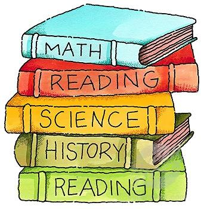

My Favorite Subjects In School
A ranked list of all the subjects in my school based on how much I like them
- Computer Science
- Physics
- Calculus
- Gym/Health
- English
- History
- Spanish
Reasoning
- I enjoy computer science a lot and although it can be frustrating it is satisfying
- I enjoy physics and it is as hard as calculus
- The same reasoning as computer science however is less enjoyable
- I like gym because it is a good stress reliever
- I enjoy it more than History and Spanish so I have no choice but to put it here
- History is a lot of memorization which makes it difficult and not enjoyable
- Spanish is very confusing as it is difficult to learn a new langauge
NOTE: For the purposes of this listing I did not count lunch as a subject (this would be at the top of my list).
I ranked these subjects solely on their contents and not if I have friends in those classes or liked the teachers.

Click Here to see my Favorite Hobbies!